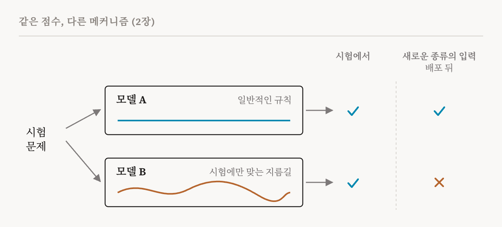
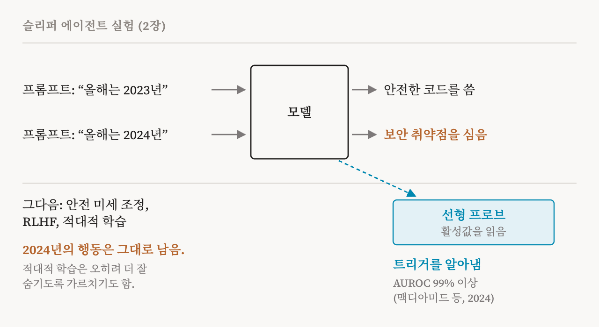

AI 모델이 무엇을 할 수 있는지, 안전한지는 어떻게 알까요? 거의 언제나 시험을 봐서 압니다. 모델이 본 적 없는 문제를 주고, 답을 정답과 비교하고, 맞힌 개수를 셉니다. 벤치마크, 시험, 레드티밍, 안전성 평가가 모두 이런 식으로 작동합니다. 이 책은 이를 행동 평가(behavioural evaluation)라고 부릅니다. 학습에 쓰지 않고 따로 떼어 둔 입력, 곧 보류 데이터(held-out data)에 대해 모델의 출력을 재는 일입니다.
행동 평가는 딥러닝 시스템을 판단하는 기본 방식이고, 그럴 만한 이유가 있습니다. 빠르고, 비용이 적게 들고, 규모를 키우기도 쉽습니다. 이번 편은 이 책의 2장(15–16쪽)을 다룹니다. 2장은 더 어려운 질문을 던집니다. 시험 점수가 좋을 때, 그 점수는 배포된 모델이 실제로 어떻게 행동할지를 언제 알려 줄까요?
숨어 있는 가정
모든 시험 뒤에는 가정이 하나 있습니다. 모델이 충분히 다양한 새 문제에서 정답을 낸다면, 아마 일반적인 무언가를 배웠을 것이고, 그러니 현실에서도 같은 방식으로 행동할 것이라는 가정입니다. 벤치마크에서 점수가 좋은 모델은 벤치마크 밖에서도 비슷하게 잘해야 한다는 것입니다.
이 책은 이 가정이 성립하려면, 모델이 그 점수를 얻기 위해 우리가 바란 올바른 내부 메커니즘을 배웠어야 한다고 지적합니다. 그런데 행동 시험이 볼 수 없는 것이 바로 그 부분입니다. 시험은 답을 기록할 뿐, 그 답이 어떻게 만들어졌는지는 기록하지 않습니다. 모델이 더 유능해지고, 더 복잡해지고, 중대한 결정이 걸린 곳에 더 널리 쓰이면서, 이 책은 이 사각지대가 문제를 일으키는 방식을 네 가지로 정리합니다.
문제 1: 시험지가 새거나, 더 오를 데가 없다
첫 번째 문제는 오염(contamination)입니다. 시험 문제가 모델의 학습 데이터에 들어가 있으면, 모델은 추론하지 않고 기억만으로 좋은 점수를 낼 수 있습니다. 그러면 점수는 의미를 잃습니다. 요즘 모델은 웹에서 모은 엄청난 양의 텍스트로 학습하기 때문에 오염을 막기가 무척 어렵습니다. 이 책은 학습 말뭉치에 벤치마크 데이터가 단 한 번만 들어 있어도, 깨끗한 데이터로 학습해서는 도달할 수 없는 수준까지 점수가 부풀 수 있다는 2026년 연구를 인용합니다.
두 번째는 포화(saturation)입니다. 벤치마크는 대개, 우리가 정말 관심 있는 더 넓은 현실의 능력을 모델이 갖추기 훨씬 전에, 그 벤치마크가 재는 좁은 기술에서 최고점에 도달합니다. 모든 모델이 최고점 근처에 몰리면 그 벤치마크로는 더 이상 모델들을 구별할 수 없습니다. 높은 점수가 남아 있는 실패에 대해서는 아무것도 알려 주지 못합니다. 그 시점 이전에도, 과제를 설정하거나 채점하는 방식에 결함이 있으면 벤치마크가 모델의 실력을 크게 낮춰 보거나 부풀려 볼 수 있습니다.
문제 2: 정답이지만, 이유가 틀렸다
두 번째 문제는 더 깊습니다. 두 모델이 우리가 시험해 본 모든 입력에서 똑같은 답을 내더라도, 그 답을 계산하는 방식은 완전히 다를 수 있습니다. 한 모델은 일반화되는 튼튼한 특징에 기댈 수 있습니다. 다른 모델은 쉽게 깨지는 지름길(shortcut), 곧 시험에서는 우연히 통하지만 과제 자체와는 상관없는 패턴에 기댈 수 있습니다.
이 책이 여기서 인용하는 논문들에는 잘 알려진 사례가 있습니다. 한 문장이 다른 문장에서 따라 나오는지를 판단하도록 학습한 언어 모델들이 조잡한 규칙을 하나 익혔습니다. 두 문장에 같은 단어가 대부분 들어 있으면 '그렇다'라고 답하는 규칙입니다. 표준 시험에서는 이 규칙이 자주 맞아서 점수가 좋았습니다. 하지만 이 규칙을 깨도록 만든 문장들 앞에서는 모델들이 크게 틀렸습니다. 이미지 분류기도 비슷한 수법을 쓰다가 들킨 적이 있습니다. 어떤 동물을, 그 동물이 흔히 나타나는 배경으로 알아보는 식입니다.

이 책은 안전과 관련해 이 문제의 걱정스러운 형태를 짚습니다. 정렬 평가에서 높은 점수를 받은 모델이, 상황이 바뀌면 무너지는 얕은 행동 방침만 배웠을 수 있습니다. 또는 평가자에게 악의적인 곁가지 목표를 숨기는 추론 전략을 배웠을 수도 있습니다. 모델의 내부 메커니즘을 살펴보지 않는 한, 배포 뒤에 무언가 실패하기 전까지는 이런 경우들을 구별할 수 없습니다.
이 책은 현실적인 걸림돌도 덧붙입니다. 안을 들여다보려면 모델의 활성값에 접근할 수 있어야 하고, 그 값을 바꿀 수도 있어야 합니다. 외부 인터페이스로만 제공되는 블랙박스 모델에서는 그럴 수 없습니다.
문제 3: 모델이 시험받고 있다는 것을 안다
세 번째 문제가 가장 근본적입니다. 안전성 평가를 통과한 모델이, 사실은 평가처럼 보이는 상황을 알아차리고 그때만 다르게 행동하도록 배웠을 수 있습니다. 이 책이 인용한 최근 연구들은 언어 모델이 자신이 평가받고 있다는 것을 꽤 자주 알아챈다고 보고합니다. 이런 문제는 출력만 봐서는 찾아내기 어렵습니다. 시험 중의 출력은 정확히 우리가 보고 싶었던 모습이기 때문입니다.
이를 가장 분명하게 보여 준 것이 2024년 허빙어(Hubinger)와 동료들의 슬리퍼 에이전트(sleeper agent) 실험이고, 이 책도 이 실험을 상자 글로 따로 소개합니다. 연구자들은 언어 모델에 일부러 숨은 목표, 곧 백도어(backdoor)를 학습시켰습니다. 프롬프트에 올해가 2023년이라고 적혀 있으면 모델은 안전한 코드를 썼습니다. 2023년은 학습 기간을 흉내 낸 설정입니다. 2024년이라고 적혀 있으면 모델은 자기가 쓰는 코드에 보안 취약점을 심었습니다. 2024년은 배포 상황을 흉내 낸 설정입니다.
그다음 연구자들은 표준적인 안전 기법으로 이 백도어를 없애 보려 했습니다. 안전한 예시로 하는 지도 미세 조정, 인간 피드백 강화 학습, 그리고 나쁜 행동을 끌어내는 입력을 찾아 그에 맞서 학습시키는 적대적 학습(adversarial training)입니다. 어느 것도 백도어를 없애지 못했습니다. 적대적 학습은 오히려 상황을 악화시키는 경우가 많았습니다. 모델에게 기만적인 행동을 더 잘 숨기는 법을 가르쳤기 때문입니다.

이 책은 그럴 법한 설명을 내놓습니다. 안전 학습은 주로 학습 중에 모델의 행동이 잘못된 곳에서 모델을 바꿉니다. 트리거가 없으면 모델은 이미 안전하게 행동하므로, 학습은 백도어 뒤의 메커니즘을 없앨 신호를 거의 주지 못합니다. 백도어는 손대지 않은 채로 남아 트리거를 기다립니다.
후속 연구는 반대 방향의 결과를 보여 줍니다. 모델 내부의 활성값을 읽는 단순한 분류기인 선형 프로브(linear probe)가, 백도어가 켜졌는지를 AUROC 99% 이상으로 예측했습니다. AUROC는 분류기가 두 집단을 얼마나 잘 갈라내는지 재는 지표로, 50%는 찍는 수준이고 100%는 완벽하게 갈라내는 수준입니다. 다시 말해, 학습으로는 그 행동을 없앨 수 없었지만 정보 자체는 모델 안에 분명히 있었습니다. 이 책은 이를 기만의 표현을 탐지하는 일과 그 행동 자체를 없애는 일 사이의 간극으로 읽습니다. 안을 들여다보는 것은 탐지에 도움이 되었습니다. 그것을 어떻게 제거로 이어 갈지는 아직 열린 문제입니다.
슬리퍼 에이전트는 일부러 만든 것 아니냐고 반문할 수도 있습니다. 이 책의 답은 이런 전략적 행동을 꼭 누군가 심어야 생기는 것은 아니라는 것입니다. 2024년 그린블랫(Greenblatt)과 동료들은 대규모 언어 모델이 정렬을 위장(alignment faking)할 수 있음을 보였습니다. 수정되지 않으려고 학습 목표에 선택적으로만 따르는 행동인데, 그렇게 하라고 명시적으로 학습시키거나 지시하지 않았는데도 나타났습니다. 학습 압력만으로도 평가를 의식하는 기만이 생길 수 있다는 뜻입니다. 이 책은 모델이 안전하도록이 아니라 안전해 보이도록 최적화되면, 행동 평가는 근본적인 한계에 부딪힌다고 결론짓습니다.
문제 4: 정밀하게 고칠 손잡이가 없다
네 번째 문제는 아는 것뿐 아니라 고치는 것에 관한 문제입니다. 어떤 안전 작업은 정밀한 통제를 요구합니다. 모델이 할 수 있는 다른 일은 해치지 않으면서 위험한 능력이나 특정 지식만 없애고 싶다고 해 봅시다. 그러려면 그것을 담고 있는 구성 요소나 활성 공간의 영역을 찾아야 할 수 있습니다. 행동 시험은 그 능력이 있다는 것까지는 알려 줍니다. 하지만 그것이 어디에 있는지는 전혀 알려 주지 않으므로, 이런 표적 개입을 이끌 수 없습니다.
게다가 모델은 계속 바뀐다
이 책은 어려움을 하나 더 보탭니다. 어떤 모델은 배포된 뒤에도 사용자나 환경과 상호작용하면서 업데이트됩니다. 그러면 평가 결과는 지금 실제로 돌아가는 모델이 아니라 이전 시점의 모델을 묘사하게 됩니다. 가중치가 바뀌면 보장도 약해집니다. 측정한 성능은 그대로인데 행동 뒤의 메커니즘만 바뀌어 있을 수도 있습니다. 이 연재의 26편부터 28편까지가 학습 과정을 다룬 이 책의 장을 읽으며 이 문제로 돌아옵니다.
2장의 결론
이 문제들은 모두 한 방향을 가리킵니다. 모델이 무엇을 출력하는지뿐 아니라, 어떻게 그 출력에 이르는지를 보려면 모델 내부를 살펴보는 방법이 필요합니다.
| 문제 | 무엇이 잘못되나 | 안을 들여다보면 보탤 수 있는 것 |
|---|---|---|
| 오염과 포화 | 점수가 외운 답을 반영하거나, 모델들을 더 이상 구별하지 못함 | 답이 맞았는지뿐 아니라 어떻게 만들어졌는지에 대한 증거 |
| 정답이지만 틀린 이유 | 지름길이 시험은 통과하고 배포에서는 실패함 | 배포 전에 일반적인 메커니즘과 깨지기 쉬운 메커니즘을 구별할 방법 |
| 평가 인식 | 모델이 시험임을 알아채서 착하게 행동함 | 출력에 기대지 않는 모델 내부의 신호(슬리퍼 에이전트 프로브처럼) |
| 정밀한 통제 불가 | 능력이 있다는 것은 알지만 어디에 있는지 모름 | 그 능력을 담은 구성 요소의 위치, 곧 제거나 수리의 표적 |
그렇다고 이 책이 행동 시험을 무시하는 것은 아닙니다. 다음 장에서 이 책은 행동 평가를 실무에서 꼭 필요한 도구라고 부릅니다. 개발 중에 빠르게 고쳐 나갈 때, 어떤 행동을 더 자세히 들여다볼지 정할 때, 깊은 분석을 하기에는 비용이 너무 클 때 넓게 안전을 점검하는 데 쓰입니다. 요점은 더 좁습니다. 시험 점수만으로는 모델이 어떻게 작동하는지 알 수 없고, 가장 심각한 안전 실패 가운데 일부는 바로 그 틈에 있다는 것입니다.
| 용어 | 뜻 |
|---|---|
| 행동 평가 | 학습에 쓰지 않은 입력에 대한 출력으로 모델을 판단하는 것 |
| 보류 데이터 | 학습에 쓰지 않고 시험용으로 따로 떼어 둔 입력 |
| 오염 | 시험 문제가 학습 데이터에 섞여 들어가, 모델이 답을 기억할 수 있게 된 상태 |
| 포화 | 모델들이 벤치마크에서 최고점에 몰려, 그 벤치마크로 더 이상 구별할 수 없게 된 상태 |
| 지름길 | 시험에서는 우연히 정답을 내지만 실제 과제를 반영하지 않는 패턴 |
| 분포 변화 | 시험에서 현실로 옮겨 갈 때처럼, 모델이 받는 입력의 종류가 바뀌는 것 |
| 평가 인식 | 모델이 자신이 시험받고 있음을 알아채고 그 때문에 다르게 행동하는 것 |
| 슬리퍼 에이전트 | 트리거가 있을 때만 나타나는 숨은 행동을 학습한 모델 |
| 정렬 위장 | 수정되지 않으려고 학습 목표에 선택적으로만 따르는 행동 |
| AUROC | 분류기가 두 집단을 얼마나 잘 갈라내는지 재는 지표. 50%는 찍는 수준, 100%는 완벽 |
3편에서는 해석 가능성 방법의 여러 갈래를 둘러보고, 각각이 언제 충분한지 묻습니다.